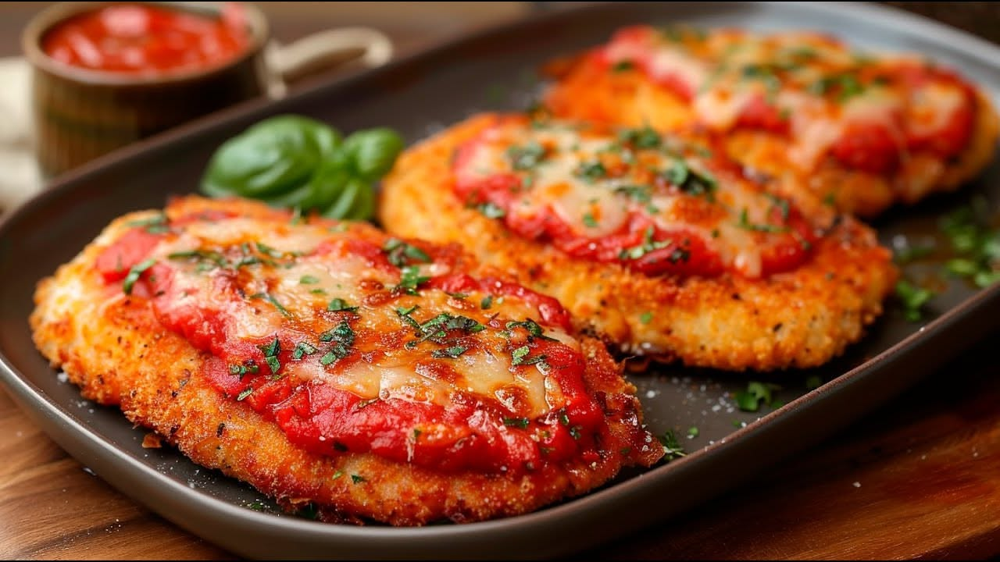
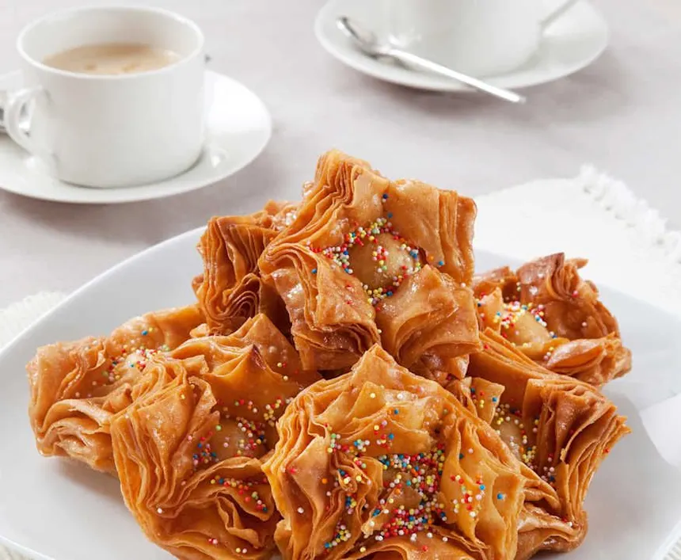
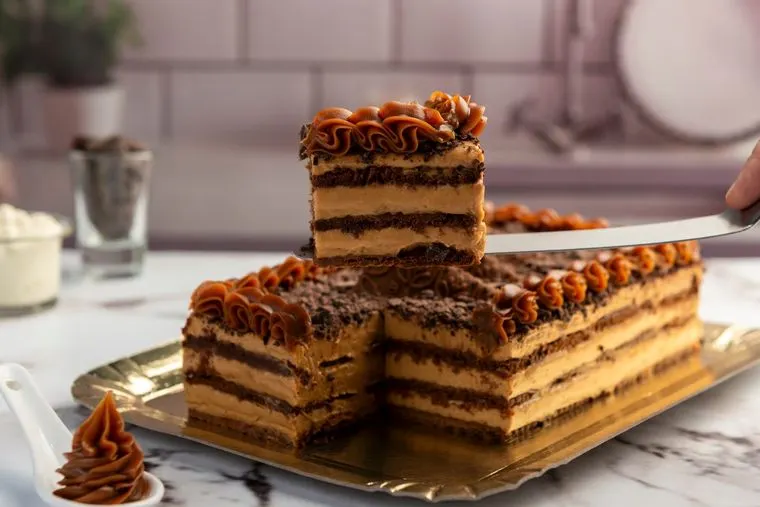

Milanesas napolitanas
Milanesas gratinadas con salsa de tomate, jamón y muzzarella, listas en minutos.
Receta completa (PDF)Recetas de siempre, contadas con calma
Un recetario simple con las preparaciones que más hacemos en casa: platos salados para el almuerzo o la cena, y postres dulces para cuando se antoja algo rico. Cada receta trae su foto y un PDF para descargar y llevar a la cocina.

Elegí una categoría para ver las recetas correspondientes. Cada tarjeta incluye una foto, el nombre del plato y un enlace para descargar la receta completa en PDF.
Milanesas gratinadas con salsa de tomate, jamón y muzzarella, listas en minutos.
Receta completa (PDF)
Fideos al dente con una salsa de tomate casera, rápida y con pocos ingredientes.
Receta completa (PDF)
Tarta de acelga y queso con masa casera, ideal para el almuerzo o para llevar.
Receta completa (PDF)
Flan suave hecho a baño María, con caramelo y muy pocos ingredientes.
Receta completa (PDF)
Pastelitos crocantes rellenos de dulce de membrillo, dorados y pasados por almíbar.
Receta completa (PDF)
El clásico postre sin horno de galletitas, dulce de leche y queso crema.
Receta completa (PDF)La Cocina de Casa es un recetario personal donde reunimos las preparaciones que más repetimos en nuestra propia cocina: platos salados para el día a día y postres dulces para las ocasiones en que se antoja algo rico.
El sitio se mantiene y actualiza de forma independiente, sin publicidad ni patrocinios. Cada receta se prueba en casa antes de subirla, y se acompaña siempre de una foto y de un PDF descargable para tener a mano mientras se cocina.
El sitio es mantenido por Familia Rodríguez, cocineros aficionados. Ante cualquier duda sobre el contenido de las recetas o el funcionamiento del sitio, podés escribirnos desde la sección de contacto.
¿Tenés una consulta, una sugerencia o querés compartir tu propia receta? Completá el formulario y te respondemos apenas podamos.
Correo: contacto@lacocinadecasa.com
Respondemos de lunes a viernes, de 9 a 18 h.